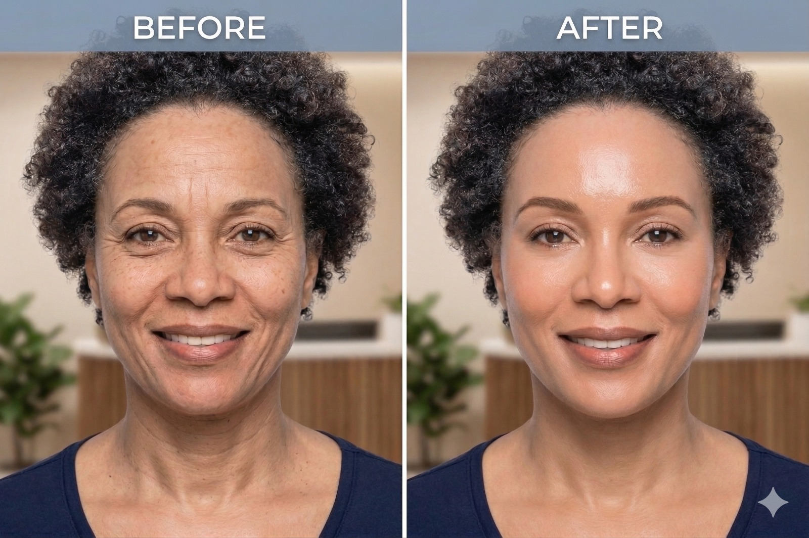

CrystelLift 8 הוא פרוטוקול טיפולי חדשני לשיפור איכות העור, מיצוק עמוק וחידוש מרקם העור – באמצעות שילוב בין טכנולוגיית גלי רדיו מתקדמת לבין פילינג קריסטלי מדויק.

הפרוטוקול נבנה כדי לייצר תוצאה נראית לעין בשכבות העמוקות ובפני השטח בו-זמנית.
4 טיפולי Morpheus 8 – RF בשילוב מיקרו-מחטים בעומק הדרמיס:
- גירוי ייצור קולגן ואלסטין
- הידוק רקמות רפויות
- שיפור קמטים וקמטוטים
- שיפור מבנה העור
3 טיפולי Crystal Peeling – ליטוש מדויק של שכבת העור החיצונית:
- הסרת תאים מתים
- החלקת מרקם העור
- שיפור גוון ואחידות
- הכנת העור לספיגה טובה יותר של חומרים פעילים
בעוד Morpheus 8 מטפל בעומק הרקמה, Crystal Peeling משפר באופן מיידי את פני השטח.
השילוב מאפשר:
- מיצוק עמוק + החלקה חיצונית
- שיפור דרמטי במרקם העור
- הפחתת קמטים וקמטוטים
- שיפור גוון ואחידות
- תוצאה נראית לעין כבר מהשלבים הראשונים

- עור מתוח וחזק יותר
- מרקם חלק ואחיד
- הפחתת סימני גיל
- מראה צעיר ורענן
- שיפור כולל באיכות העור
התוצאות נבנות בהדרגה לאורך הסדרה וממשיכות להשתפר גם לאחר סיומה.
CrystelLift 8 מתאים במיוחד ל:
- עור רפוי או עייף
- קמטים וקמטוטים
- מרקם עור לא אחיד
- פיגמנטציה קלה עד בינונית
- מטופלים המחפשים שיפור משמעותי ללא הליכים פולשניים
- שילוב טכנולוגיות מוכחות
- טיפול עומק + טיפול שטח
- ללא צורך בהליכים פולשניים
- התאמה אישית מלאה
- תוצאות טבעיות ולא מלאכותיות
- טיפולי Morpheus 8 מבוצעים במרווחים מותאמים
- טיפולי Crystal Peeling משולבים בין הטיפולים לחיזוק התוצאה
- משך טיפול: כ-45–60 דקות
- תדירות: בהתאם לאבחון מקצועי
לפני תחילת התהליך מתבצע אבחון מקצועי הכולל:
- רמת אלסטיות העור
- עומק קמטים
- מצב מרקם וגוון
- רגישות העור
בהתאם לכך נבנה פרוטוקול מותאם אישית לכל מטופל.
הטיפולים מבוצעים תחת נהלים מחמירים, תוך שימוש בטכנולוגיות מתקדמות המאושרות על ידי משרד הבריאות.
הדגש הוא על תוצאה קלינית מדידה – לא רק שיפור אסתטי זמני.
ניתן לתאם שיחת ייעוץ עם נציג רפואי ללא עלות וללא התחייבות, או לקבוע פגישה באופן עצמאי.
תיאום תור טלפוני ללא עלות